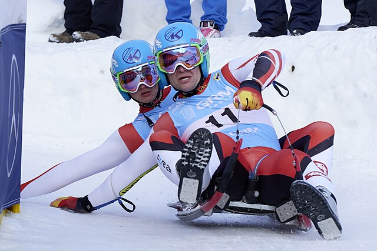
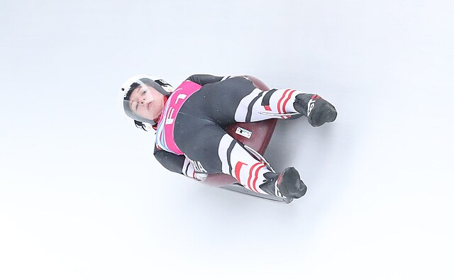
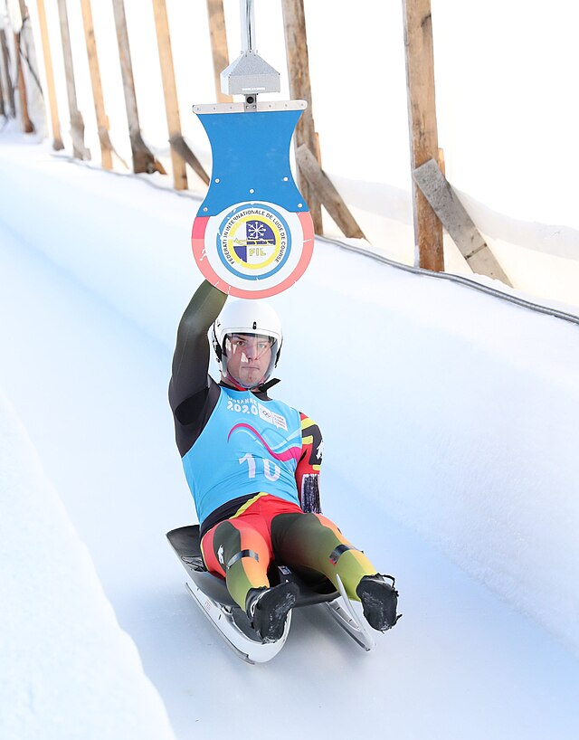

Luge
Un sport d'hiver individuel alliant vitesse extreme et précision millimétrée
Présentation du la luge
La luge est une discipline des Jeux olympiques d’hiver où les athlètes descendent une piste glacée allongés sur le dos, les pieds en avant. Ce sport se distingue par sa vitesse impressionnante et la précision des trajectoires.
Les lugeurs atteignent des vitesses dépassant souvent les 130 km/h. Contrairement au bobsleigh, ils sont seuls sur leur engin et dirigent la luge avec de légers mouvements du corps.
Le déroulement d'une course en luge
1. Le départ
Le lugeur s’élance assis et se propulse avec ses mains équipées de pointes avant de s’allonger rapidement sur la luge.
2. La descente
L’athlète descend la piste glacée à très grande vitesse en contrôlant sa trajectoire avec des mouvements précis du corps.
3. Le contrôle
Les moindres mouvements influencent la direction. Une grande précision est nécessaire pour éviter les erreurs.
4. Le classement
Le classement se déroule sur plusieurs manches successives. À chaque descente, le temps est enregistré puis additionné aux autres. À la fin de la compétition, le lugeur ayant réalisé le meilleur temps total est déclaré vainqueur.
5. Le rôle de l’équipe
En plus de la poussée initiale, la coordination entre les membres de l’équipe est indispensable pour garantir stabilité, équilibre et performance.
Les épreuves de la luge
Lors des Jeux olympiques d’hiver, le bobsleigh comprend plusieurs formats :
- Luge simple homme
- Luge simple femme
- Luge double
- Relais par équipe
Chaque épreuve possède ses spécificités, mais toutes demandent une excellente explosivité au départ, un grand sang-froid et une parfaite maîtrise de la vitesse.
Un sport a couper le soufle
Vitesse
Les lugeurs atteignent des vitesses dépassant les 130 km/h sur certaines pistes .
Adrénaline
Chaque descente est intense et impressionnante, avec des virages pris à très grandes vitesses .
Précision
Le moindre mouvement du corps influence la trajectoire et peut faire toute la différence.
Spectacle
Un sport rapide, technique et visuellement impressionnant, nottament grâce à sa vitesse et aux virages spectaculaires.
La luge aux JO 2026



Sur ces images, découvrez les différentes épreuves de luge aux JO : un lugeur en simple, une lugeuse en simple et un double. Chacune illustre la vitesse, la précision et la maîtrise nécessaires pour descendre une piste glacée en toute sécurité.
Informations utiles
Consultez le programme des épreuves de luge et réservez vos billets pour assister à cette discipline incontournable des Jeux olympiques d’hiver 2026.